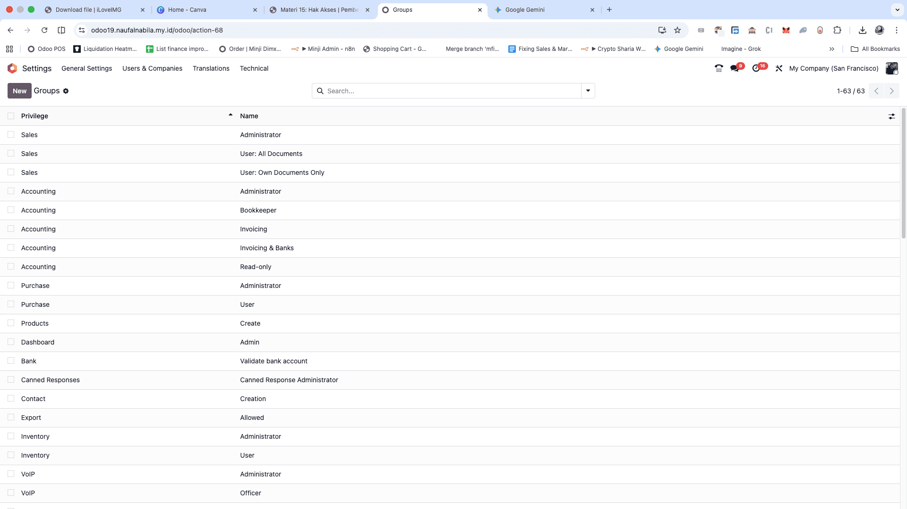

Saat menambahkan karyawan baru, Anda mungkin berpikir untuk mengatur izin aksesnya secara individu. Namun, cara yang lebih efisien adalah menggunakan Grup Akses (Access Groups).
Keuntungan Grup:
- Efisiensi: Lebih cepat mengatur izin untuk banyak pengguna sekaligus.
- Konsistensi: Pastikan semua orang dalam peran yang sama memiliki akses yang sama.
- Dinamis: Jika karyawan berganti, grup tetap ada; Anda hanya perlu mengganti usernya.

📸 Screenshot: Tampilan menu Users & Groups